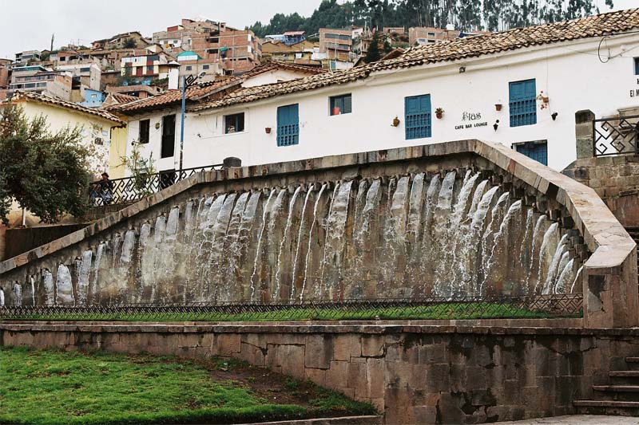
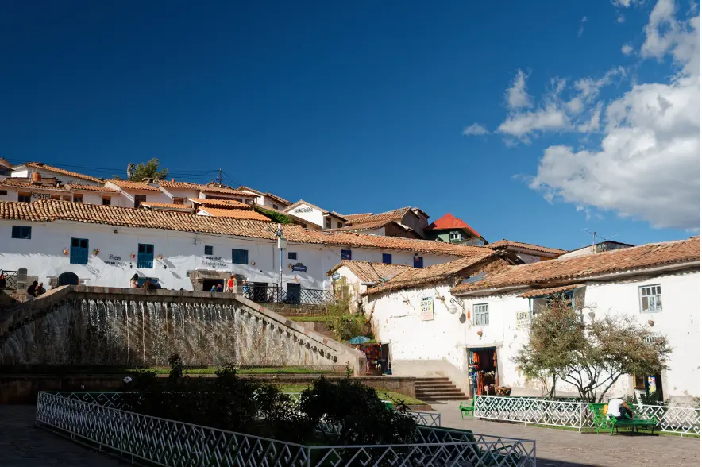
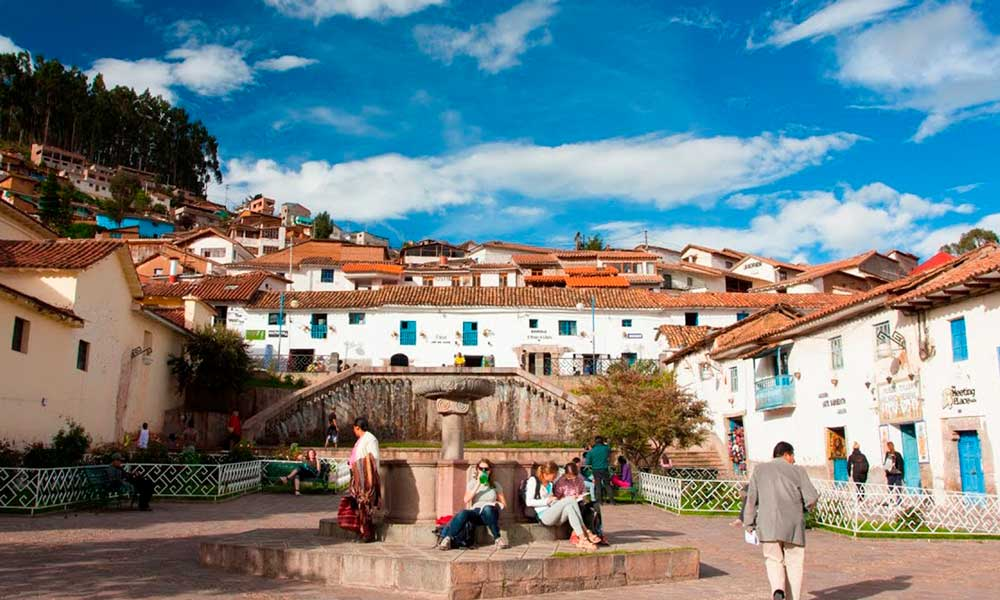

Barrio de San Blas: El barrio bohemio de Cusco
El Barrio de San Blas es uno de los lugares más encantadores de Cusco. Conocido por sus calles empedradas, talleres de artesanos y vistas panorámicas, es un sitio ideal para sumergirse en la cultura cusqueña y disfrutar de su vibrante ambiente artístico.
Historia
San Blas fue un barrio habitado por la nobleza inca y, tras la llegada de los españoles, se convirtió en el hogar de artistas y artesanos. Su famosa iglesia, la Iglesia de San Blas, es conocida por su impresionante púlpito tallado en madera, una obra maestra del arte colonial cusqueño.




Horarios y Ubicación
- Ubicación: A unas cuadras al noreste de la Plaza de Armas de Cusco, Perú.
- Horarios de visita: Acceso libre las 24 horas.
- Costo de entrada: Gratis, aunque algunos talleres y museos pueden cobrar entrada.
Consejos para Visitantes
- Explora sus talleres: San Blas es el hogar de muchos artesanos que crean cerámica, pinturas y tallados en madera.
- Visita la Iglesia de San Blas: No te pierdas su famoso púlpito tallado en madera.
- Disfruta de la gastronomía: En el barrio hay varios cafés y restaurantes con vistas espectaculares.
- Prepárate para caminar: Las calles son empinadas, así que usa calzado cómodo.
- Visita de noche: El barrio tiene una atmósfera especial con su iluminación nocturna y bares acogedores.